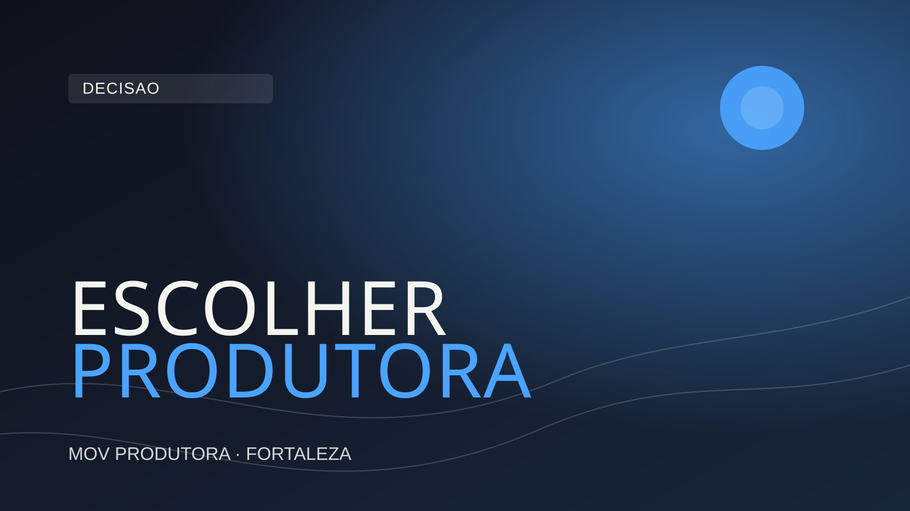

Fortaleza tem um mercado audiovisual ativo e crescente. São dezenas de produtoras, videomakers freelancers e agências que oferecem serviços de vídeo — com propostas que variam de algumas centenas a dezenas de milhares de reais pelo mesmo tipo de projeto.
Como saber em quem confiar? Como garantir que o dinheiro investido vai gerar resultado — e não virar um vídeo que ninguém assiste, que não representa a empresa como deveria, ou que foi entregue meses depois do prazo?
Este guia apresenta os 7 critérios mais importantes para avaliar uma produtora de vídeo antes de contratar. São pontos práticos, baseados no que realmente importa — e que poupam tempo, dinheiro e dor de cabeça.
O primeiro e mais óbvio critério é o portfólio — mas muitas empresas não o avaliam da forma correta. Não basta que o portfólio exista: ele precisa mostrar trabalhos reais, com empresas reais, em projetos similares ao que você precisa.
Uma produtora que tem um portfólio impressionante de videoclipes musicais pode não ter a linguagem e a abordagem necessárias para um vídeo institucional corporativo. Uma que produz muito conteúdo para redes sociais pode não ter experiência com a complexidade de uma cobertura de evento com múltiplas câmeras.
Perguntas certas na hora de avaliar o portfólio: Os trabalhos mostrados são do mesmo segmento ou tipo que o meu projeto? A qualidade é consistente ou há grandes variações entre projetos? Os clientes anteriores são empresas reconhecíveis do mercado cearense ou nacional?
Em Fortaleza, vale também verificar se a produtora já trabalhou com empresas do seu setor ou de setores próximos. Conhecimento do mercado local faz diferença na abordagem, nos prazos e na compreensão das nuances de comunicação do público cearense.
Uma produtora profissional tem um processo claro e comunicável. Quando você perguntar "como funciona o processo de produção?", a resposta deve incluir etapas bem definidas: briefing, roteiro, aprovações, gravação, edição, revisões e entrega.
Produtoras sem processo estruturado tendem a improvizar em cada projeto. Isso resulta em prazos não cumpridos, expectativas frustradas e resultados que não refletem o que foi combinado no início.
Sinais de alerta: a produtora não faz briefing aprofundado antes de começar, não apresenta roteiro para aprovação, não define claramente quantas rodadas de revisão estão incluídas, ou não tem contrato com escopo bem descrito.
Você não precisa entender de câmeras e iluminação para avaliar esse critério. Basta olhar o resultado: os vídeos do portfólio têm imagem nítida e com profundidade de campo? O áudio está limpo e sem ruídos? A iluminação é controlada e adequada à cena?
Equipamento profissional não é garantia de resultado — mas a ausência dele é garantia de limitação. Uma gravação feita com câmera sem suporte de áudio externo, por exemplo, vai sempre resultar em áudio comprometido, independentemente de quantas melhorias sejam feitas na edição.
Em Fortaleza, a maioria das produtoras sérias trabalha com câmeras da linha Sony, Canon ou Blackmagic, com objetivas de qualidade, iluminação LED e microfones direcionais ou lapelas. Se a produtora não consegue informar com clareza quais equipamentos usa, isso é um sinal de atenção.
Todo mundo pode criar um site bonito e prometer excelência. A evidência real está no que os clientes anteriores falam sobre a experiência. Procure por depoimentos verificáveis — não apenas frases genéricas no site, mas avaliações no Google, no Instagram ou referências que você possa contatar diretamente.
Melhor ainda: pergunte diretamente à produtora se pode indicar um cliente anterior para você conversar. Uma empresa confiante na qualidade do seu trabalho vai fazer isso sem hesitar. Quem hesita geralmente tem razão para hesitar.
Também vale verificar se a produtora tem avaliações no Google Meu Negócio e como elas são. Para empresas de Fortaleza, avaliações locais dão uma visão mais clara da reputação no mercado cearense.
A comunicação durante o processo de produção é tão importante quanto a qualidade técnica do vídeo final. Uma produtora que demora dias para responder mensagens antes de fechar o contrato provavelmente vai continuar demorando depois que o contrato for assinado.
Durante a fase de negociação, observe: a produtora responde com agilidade? As respostas são claras e completas? Ela faz perguntas inteligentes sobre o seu projeto antes de mandar o orçamento? Ela demonstra compreensão do seu negócio e do seu objetivo?
O alinhamento de expectativas no início é o que evita surpresas desagradáveis no final. Produtoras que ouvem bem e fazem as perguntas certas tendem a entregar resultados muito mais próximos do que o cliente imaginou — porque elas entenderam de verdade o que o cliente queria.
Um orçamento bem feito descreve claramente o que está incluído, o que não está, qual é o prazo de entrega, quantas rodadas de revisão estão previstas e quais são as condições de pagamento. Um orçamento vago — "vídeo institucional completo: R$ X" — é convite para mal-entendido.
Compare orçamentos de produtoras diferentes, mas não compare apenas o preço final. Compare o escopo. Uma produtora que cobra mais pode estar incluindo roteiro, day de gravação extra, versões para diferentes plataformas e trilha sonora licenciada. Outra que cobra menos pode estar excluindo tudo isso.
Em Fortaleza, os preços de produção de vídeo variam muito. Vídeos corporativos simples podem partir de R$ 2.000 a R$ 3.000. Produções mais elaboradas — com múltiplos dias de gravação, motion graphics e locutor profissional — podem custar R$ 10.000 ou mais. Saiba o que você está pagando em cada caso.
Por último — e frequentemente subestimado —: a produtora entende do mercado de Fortaleza e do Ceará? Ela conhece as especificidades de comunicação do público nordestino? Ela tem experiência com os tipos de negócio e setores que existem na nossa cidade?
Mas mais do que o conhecimento local, busque uma produtora que pense estrategicamente. Que não apenas execute o que você pediu, mas que faça perguntas como: Onde esse vídeo vai ser publicado? Qual é o público que vai assistir? Qual ação você quer que esse público tome depois de assistir?
A diferença entre uma produtora técnica e uma produtora estratégica está exatamente aqui. A técnica entrega um vídeo bonito. A estratégica entrega um vídeo que funciona — que gera resultado mensurável para o seu negócio.
Produtoras profissionais respondem todas essas perguntas com clareza e sem evasão. Se alguma resposta for vaga ou evasiva, considere isso um sinal importante na sua decisão.
Escolher a produtora de vídeo certa em Fortaleza não é apenas uma questão de preço. É uma questão de confiança, alinhamento e competência técnica. Uma produtora que atende bem todos os 7 critérios acima vai entregar muito mais valor do que o investimento inicial — e se tornar um parceiro de longo prazo na comunicação da sua empresa.
Se você está procurando uma produtora em Fortaleza com portfólio sólido, processo estruturado e visão estratégica, entre em contato com a MOV Produtora. Temos mais de 5 anos de experiência no mercado cearense e mais de 500 projetos entregues para empresas dos mais variados segmentos.
Quer conhecer nosso processo e receber um orçamento detalhado para o seu projeto?
Falar com a MOV pelo WhatsApp